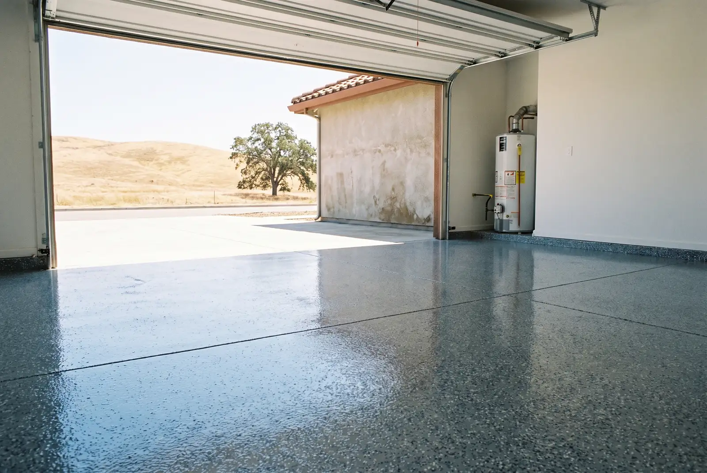

Flake and solid-color garage floor coatings over a properly ground slab — built to take hot tires and Central Valley summers.
Call Now for a Free Estimate
Garage floor epoxy in Stockton is a resin coating bonded to your slab after the concrete has been diamond-ground open. It replaces bare, dusting, oil-stained concrete with a sealed surface you can mop, and it is the most common job we do across Lincoln Village, Brookside, Weston Ranch and Morada. A typical two-car garage is a one or two day project.
Grinding comes first and takes the longest. Walk-behind grinders with vacuum shrouds cut off the top layer of the slab until it reaches a CSP 1 to 2 profile — in practice, the concrete should feel like 100-grit sandpaper and absorb a splash of water in under a minute.
Then cracks get chased out and filled, spalled edges rebuilt, and patches ground flush. The pigmented base coat goes down with a squeegee and gets back-rolled. If you chose flake, vinyl chips get broadcast into the wet resin until the surface is fully covered, then scraped and vacuumed the next morning. One or two clear topcoats finish it.
You can walk on it the next day. With a polyaspartic clear coat, the car goes back in around 24 hours.
Two causes account for nearly every failure we are called to strip out.
The slab was etched, not ground. Acid opens the pores but it will not remove silicone or the tire polymer that soaks into a garage floor over years of parking. The coating goes down over a contaminant layer and releases later. Concrete that was machine-troweled has a second problem: a weak skin of cement paste on top that acid barely touches and no coating can grip.
Moisture is pushing from underneath. Water vapor moving up through the slab cannot pass through epoxy, so it builds hydrostatic pressure and lifts the coating off. This shows up on slabs sitting below grade on any side, and it announces itself with dark patches or a white powdery residue on bare concrete.
Hot tire pickup is a third, separate issue and it is not a prep failure. Low-solids products soften under a tire that just came off Highway 99 in August no matter how well the floor was prepared — the fix is a better topcoat, not more grinding.
Installed pricing runs about $4 to $10 per square foot, so a Stockton two-car garage generally lands between $1,900 and $4,600. The spread comes down to four things.
| Factor | Effect on your quote |
|---|---|
| Slab condition | Resurfacing badly spalled concrete adds roughly $3–$7 per sq ft |
| Existing coating | Stripping and grinding off failed epoxy is billed as its own step |
| Moisture | A vapor-barrier primer is an added layer of material and labor |
| Finish | Solid color is cheapest, flake is mid, metallic is highest |
The one lever entirely in your control: have the garage completely empty before the crew arrives. Every hour they spend moving your storage is an hour billed at labor rates.
Epoxy is the affordable workhorse and makes an excellent base coat. It cures slowly — roughly 16 hours per coat, close to a week before you park on it, and about a month to fully harden — and it can amber under UV exposure.
Polyaspartic is dry to walk on in about an hour, holds its color in sunlight, stays more flexible so it resists chips and scuffs, and goes down across a wider temperature range. It costs more.
For most Stockton garages the answer is both: an epoxy base for build and adhesion, with a polyaspartic clear coat on top to take the UV and the hot tires. If the garage door faces west and spends afternoons full of sun, that UV-stable topcoat stops being optional.
Comparing this against our other systems? See the full list of epoxy flooring services in Stockton.
A standard two-car garage in Stockton takes one to two days on site. Grinding and prep fill most of the first day, coating happens after that, and you can walk on the floor the following morning. With a polyaspartic topcoat you can park on it in about 24 hours.
You can, but the results depend almost entirely on the prep. Big-box kits ship with citric acid etch, which will not remove the tire polymer and silicone soaked into a used garage slab, and they are low-solids products prone to hot tire pickup. Renting a diamond grinder closes most of that gap.
It hides hairline cracks once they are filled and ground flush, which is part of every install we do. It will not bridge a moving crack or a settled section of slab. Those get repaired as concrete work before any coating goes down.
Any month works, but the mid-May to early October dry stretch is the smoothest because Stockton gets almost no rain in that window. The tradeoff is heat: above about 90 degrees the resin's working time shortens, so we start early and mix in smaller batches.
Dust mop it, then mop with warm water and a little mild soap. Skip anything citrus-based or vinegar-based, and skip the soap-based cleaners that leave a film. For a Stockton garage the bigger job is usually just rinsing valley dust off a few times a year.
We measure the slab, test how it takes water, and hand you a written price before we leave. Free, no obligation.